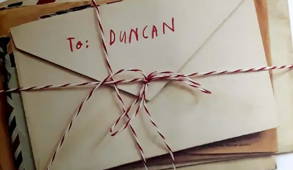

Once Upon a Page
Once Upon a Page

Chapter 1: Dear Duncan

One day in class, Duncan went to take out his crayons and found a stack of letters with his name on them.
RED:
Hey Duncan,
It’s me, Red Crayon. We need to talk. I wear myself out colouring fire engines, apples, strawberries and EVERYTHING else that’s RED. I even have to work on holidays! I have to colour Santas and ALL the hearts on Valentine's Day!
I NEED A REST!
Your overworked friend,
Red Crayon
PURPLE:
Dear Duncan,
All right, LISTEN
I love that I'm your favorite crayon for grapes, dragons, and wizards' hats, but it makes me crazy that so much of my gorgeous color goes outside the lines. if you DON'T START COLORING INSIDE the lines soon... I'm going to COMPLETELY LOST IT
Your very neat friend,
Purple Crayon
BEIGE:
Dear Duncan,
I'm tired of being called "light brown" or "Dark tan" because I am neither.
I am BEIGE and I am proud. I'm also tired of being second place to Mr. Brown Crayon.
It's not fiar that Brown gets all the bears, ponies, and puppies while the only things I get are turkey dinners(if I'm lucky) and wheat, and let's be honest- when was the last time you saw a kid excited about coloring wheat?
Your BEIGE friend,
Beige Crayon
GRAY:
Duncan
GRAY Crayon here. You're KILLING ME! I know you love Elephants, And I know that elephants are gray but that's a LOT of space to color in all by myself.
And don't even get me started in your rhinos, hippos and HUMPBACK WHALES...
You know how tired I am after handling one of those things? such BIG animals..
Baby penguins are gray, you know.. so are very tiny rocks. Pebbles how about one of those once in a while to give me a break?
Your very tired friend,
Gray Crayon